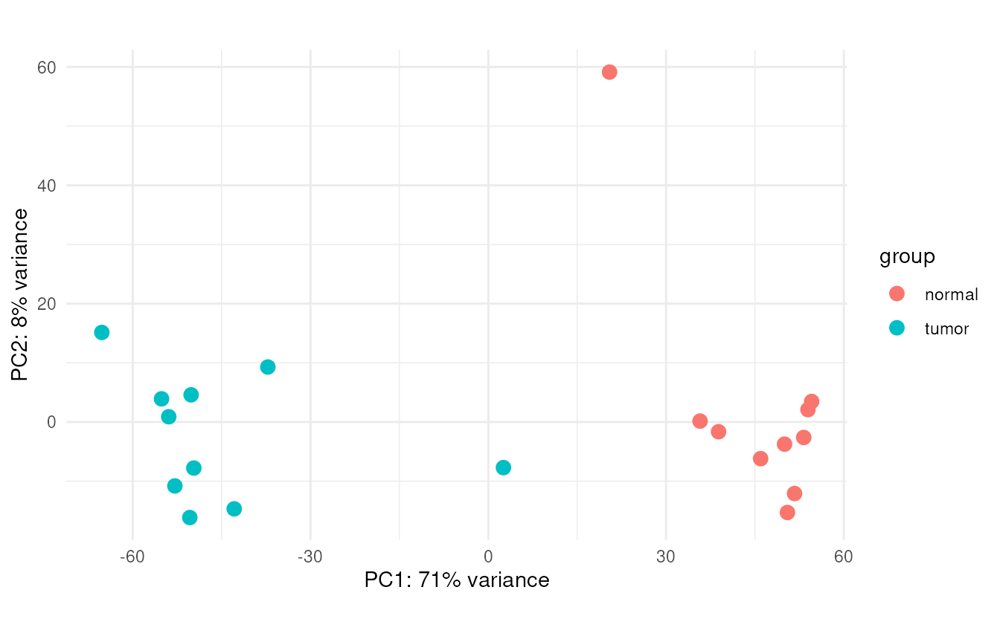
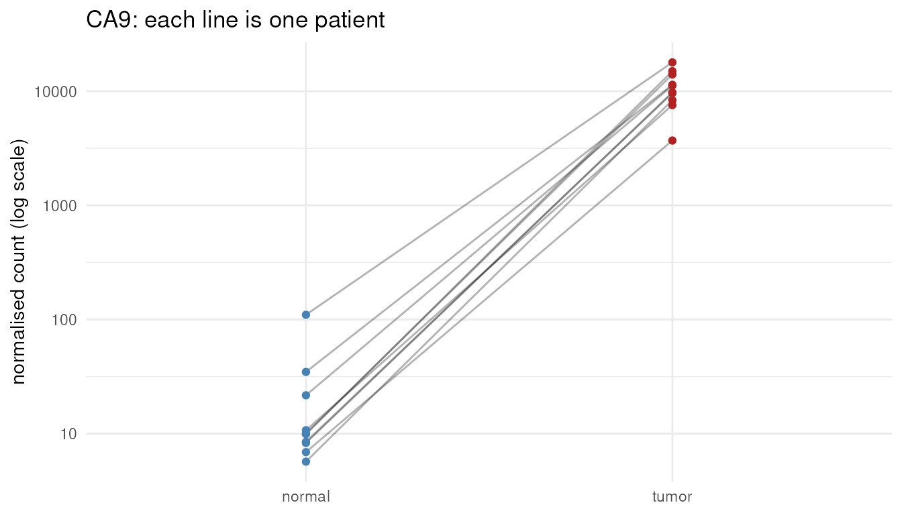
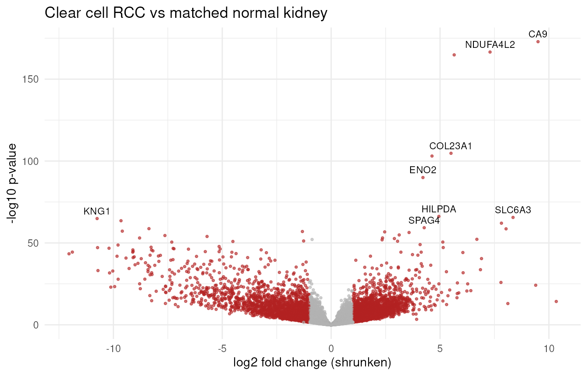
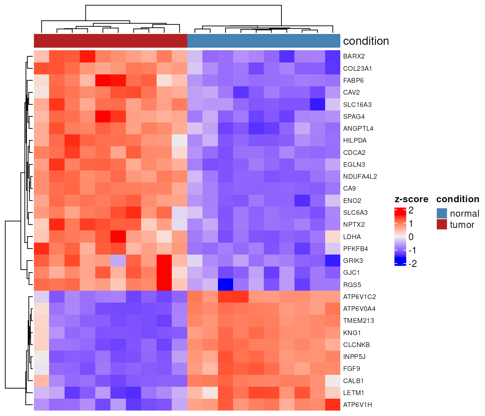

vignettes/rnaseq-demo.Rmd
rnaseq-demo.Rmd
suppressPackageStartupMessages({
library(TCGAbiolinks)
library(SummarizedExperiment)
library(DESeq2)
library(ggplot2)
library(dplyr)
library(tibble)
library(ComplexHeatmap)
})TCGAbiolinks queries the GDC and returns STAR gene
counts as a RangedSummarizedExperiment. Querying the GDC
returns only file metadata, so we can drop unpaired patients
before downloading anything. The prepared object is saved to
data/ and committed with the code, so the talk never
depends on the GDC being up.
se_file <- file.path(params$data_dir,
sprintf("%s_%dpairs_STAR_counts.rds", params$project, params$n_pairs))
if (file.exists(se_file) && !params$refresh) {
se <- readRDS(se_file)
} else {
gdc_dir <- path.expand(params$gdc_dir)
# TCGAbiolinks writes scratch files (MANIFEST.txt, df.rds, results.rds) to the working
# directory, so run the download from a temporary folder to keep the repo clean
owd <- setwd(tempdir())
se <- tryCatch({
query <- GDCquery(
project = params$project,
data.category = "Transcriptome Profiling",
data.type = "Gene Expression Quantification",
workflow.type = "STAR - Counts",
sample.type = c("Primary Tumor", "Solid Tissue Normal")
)
# Keep only patients with both tumour and normal, then the first n_pairs of them
files <- query$results[[1]]
patient <- substr(files$cases, 1, 12)
paired <- intersect(patient[files$sample_type == "Solid Tissue Normal"],
patient[files$sample_type == "Primary Tumor"])
paired <- head(sort(paired), params$n_pairs)
query$results[[1]] <- files[patient %in% paired, ]
message(length(paired), " paired patients, ", nrow(query$results[[1]]), " files to download")
# Small chunks: if the GDC drops mid-download, re-running only fetches what's missing
GDCdownload(query, method = "api", files.per.chunk = 5, directory = gdc_dir)
GDCprepare(query, directory = gdc_dir)
}, finally = setwd(owd))
# Slim to what the demo uses so the saved object is small enough to commit
se <- se[rowData(se)$gene_type == "protein_coding", ]
assays(se) <- assays(se)[c("unstranded", "tpm_unstrand")]
colData(se) <- colData(se)[, vapply(colData(se), is.atomic, logical(1))]
dir.create(params$data_dir, showWarnings = FALSE, recursive = TRUE)
saveRDS(se, se_file, compress = "xz")
}SummarizedExperiment
One object holds the assay matrices, the feature annotation and the sample annotation, all kept in sync.
se## class: RangedSummarizedExperiment
## dim: 19962 20
## metadata(1): data_release
## assays(2): unstranded tpm_unstrand
## rownames(19962): ENSG00000000003.15 ENSG00000000005.6 ...
## ENSG00000288674.1 ENSG00000288675.1
## rowData names(10): source type ... hgnc_id havana_gene
## colnames(20): TCGA-B0-5696-01A-11R-1541-07 TCGA-B0-5694-11A-01R-1541-07
## ... TCGA-B0-5402-11A-01R-1503-07 TCGA-A3-3387-11A-01R-1541-07
## colData names(63): barcode patient ... paper_mRNA_cluster
## paper_microRNA_cluster
assayNames(se) # several count/normalised matrices## [1] "unstranded" "tpm_unstrand"
assay(se, "unstranded")[1:3, 1:3] # genes x samples## TCGA-B0-5696-01A-11R-1541-07 TCGA-B0-5694-11A-01R-1541-07
## ENSG00000000003.15 3412 4720
## ENSG00000000005.6 8 432
## ENSG00000000419.13 1567 1424
## TCGA-B0-4700-01A-02R-1541-07
## ENSG00000000003.15 2325
## ENSG00000000005.6 13
## ENSG00000000419.13 1403
rowRanges(se)[1:3, c("gene_name", "gene_type")] # features carry genomic coordinates## GRanges object with 3 ranges and 2 metadata columns:
## seqnames ranges strand | gene_name
## <Rle> <IRanges> <Rle> | <character>
## ENSG00000000003.15 chrX 100627108-100639991 - | TSPAN6
## ENSG00000000005.6 chrX 100584936-100599885 + | TNMD
## ENSG00000000419.13 chr20 50934867-50958555 - | DPM1
## gene_type
## <character>
## ENSG00000000003.15 protein_coding
## ENSG00000000005.6 protein_coding
## ENSG00000000419.13 protein_coding
## -------
## seqinfo: 25 sequences from an unspecified genome; no seqlengths
table(se$sample_type) # sample metadata lives in colData()##
## Primary Tumor Solid Tissue Normal
## 10 10Subsetting keeps everything aligned: one [ operation on
features and samples, with no separate bookkeeping.
bc <- colnames(se)
se$patient <- factor(substr(bc, 1, 12))
se$condition <- factor(ifelse(substr(bc, 14, 15) == "11", "normal", "tumor"),
levels = c("normal", "tumor"))
se <- se[rowData(se)$gene_type == "protein_coding", # protein-coding genes
!duplicated(substr(bc, 1, 16))] # one aliquot per sample
dim(se)## [1] 19962 20
table(se$condition)##
## normal tumor
## 10 10Every patient contributes a tumour and an adjacent normal kidney
sample, so the design blocks on patient
(~ patient + condition). Each tumour is compared with that
patient’s own normal tissue.
# Keep patients with both a tumour and a normal sample
paired <- names(which(tapply(se$condition, se$patient, \(x) length(unique(x)) == 2)))
se_p <- se[, se$patient %in% paired]
se_p$patient <- droplevels(se_p$patient)
# Subset to speed up analysis and drop levels
se_p<-se_p[,se_p$patient %in% c(unique(se_p$patient)[1:10])]
for (v in names(colData(se_p))) {
if (is.factor(se_p[[v]])) se_p[[v]] <- droplevels(se_p[[v]])
}
dds <- DESeqDataSetFromMatrix(
countData = assay(se_p, "unstranded"),
colData = colData(se_p)[, c("patient", "condition")],
rowData = rowData(se_p)[, c("gene_name", "gene_type")],
design = ~ patient + condition
)
dds <- dds[edgeR::filterByExpr(counts(dds), group = dds$condition), ]
dds## class: DESeqDataSet
## dim: 15589 20
## metadata(1): version
## assays(1): counts
## rownames(15589): ENSG00000000003.15 ENSG00000000005.6 ...
## ENSG00000288658.1 ENSG00000288675.1
## rowData names(2): gene_name gene_type
## colnames(20): TCGA-B0-5696-01A-11R-1541-07 TCGA-B0-5694-11A-01R-1541-07
## ... TCGA-B0-5402-11A-01R-1503-07 TCGA-A3-3387-11A-01R-1541-07
## colData names(2): patient condition
vsd <- vst(dds, blind = TRUE)
plotPCA(vsd, intgroup = "condition") + theme_minimal()
dds <- DESeq(dds)
res <- results(dds, name = "condition_tumor_vs_normal", alpha = params$fdr)
res <- lfcShrink(dds, coef = "condition_tumor_vs_normal", res = res, type = "apeglm")
summary(res)##
## out of 15589 with nonzero total read count
## adjusted p-value < 0.05
## LFC > 0 (up) : 4505, 29%
## LFC < 0 (down) : 4685, 30%
## outliers [1] : 0, 0%
## low counts [2] : 0, 0%
## (mean count < 8)
## [1] see 'cooksCutoff' argument of ?results
## [2] see 'independentFiltering' argument of ?results
res_df <- as.data.frame(res) |>
rownames_to_column("gene_id") |>
mutate(symbol = rowData(dds)[gene_id, "gene_name"],
sig = !is.na(padj) & padj < params$fdr & abs(log2FoldChange) > 1) |>
arrange(padj)
head(res_df[, c("symbol", "baseMean", "log2FoldChange", "padj")], 10)## symbol baseMean log2FoldChange padj
## 1 CA9 5436.175 9.499988 1.998184e-169
## 2 NDUFA4L2 55408.040 7.296260 2.132893e-163
## 3 CDCA2 652.243 5.650304 7.615582e-162
## 4 COL23A1 6482.946 5.504011 7.049325e-102
## 5 EGLN3 17320.812 4.630539 2.687916e-100
## 6 ENO2 7091.305 4.215026 3.004711e-87
## 7 HILPDA 4969.991 4.946414 1.425151e-63
## 8 SLC6A3 4210.410 8.352608 5.176147e-63
## 9 KNG1 16012.172 -10.748693 2.258839e-62
## 10 CALB1 15785.586 -9.651257 4.408179e-61Most clear cell tumours lose VHL, which switches on the hypoxia (HIF) response even with normal oxygen. Classic HIF targets should be strongly up in tumour.
hif_genes <- c("CA9", "NDUFA4L2", "VEGFA", "EGLN3")
res_df |> filter(symbol %in% hif_genes) |> select(symbol, log2FoldChange, padj)## symbol log2FoldChange padj
## 1 CA9 9.499988 1.998184e-169
## 2 NDUFA4L2 7.296260 2.132893e-163
## 3 EGLN3 4.630539 2.687916e-100
## 4 VEGFA 2.712566 2.246540e-16
ca9 <- plotCounts(dds, gene = res_df$gene_id[match("CA9", res_df$symbol)],
intgroup = c("condition", "patient"), returnData = TRUE)
ggplot(ca9, aes(condition, count, group = patient)) +
geom_line(alpha = 0.3) +
geom_point(aes(colour = condition), size = 1.5) +
scale_y_log10() +
scale_colour_manual(values = c(normal = "steelblue", tumor = "firebrick"), guide = "none") +
labs(title = "CA9: each line is one patient", x = NULL, y = "normalised count (log scale)") +
theme_minimal()
ggplot(res_df, aes(log2FoldChange, -log10(pvalue), colour = sig)) +
geom_point(size = 0.7, alpha = 0.6) +
geom_text(data = slice_head(filter(res_df, sig), n = 12), aes(label = symbol),
colour = "black", size = 3, vjust = -0.6, check_overlap = TRUE) +
scale_colour_manual(values = c(`FALSE` = "grey70", `TRUE` = "firebrick"), guide = "none") +
labs(title = "Clear cell RCC vs matched normal kidney", x = "log2 fold change (shrunken)",
y = "-log10 p-value") +
theme_minimal()
top <- head(res_df$gene_id[res_df$sig], 30)
m <- t(scale(t(assay(vsd)[top, ])))
rownames(m) <- rowData(vsd)[top, "gene_name"]
Heatmap(m, name = "z-score", show_column_names = FALSE,
row_names_gp = grid::gpar(fontsize = 7),
top_annotation = HeatmapAnnotation(
condition = vsd$condition,
col = list(condition = c(normal = "steelblue", tumor = "firebrick"))))
SummarizedExperiment keeps counts, gene annotation
and sample metadata together, so subsetting never puts them out of
sync.colData() go straight into the
model formula, which is where clinical data models meet the assay
data.